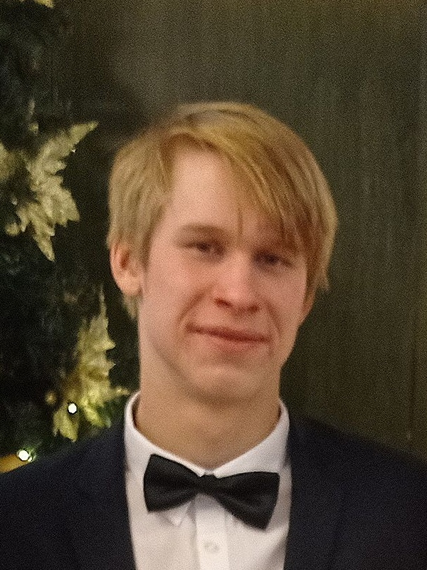

Informace
Autorem této stránky je David Boček student střední školy Polytechnické Havířov. Tato webová stránka vznikla jako ročníková práce do hodiny výpočetní techniky, která byla zadaná učitelkou Gabrielou Dembowskou. Tato ročníková práce je tvořena na téma vybraného státu, kterým je v tomhle případě Francie.
Budu velmi rád pokud se vám táto webová stránka líbí. Prosím, berte na vědomí, že tato webová stránka je pouze ročníková práce do školy. Mezi zdroje této stránky byla použita umělá inteligence jako výpomoc při hledání informací a všechny obrázky byly stahovány z Google obrázků. Děkuji.